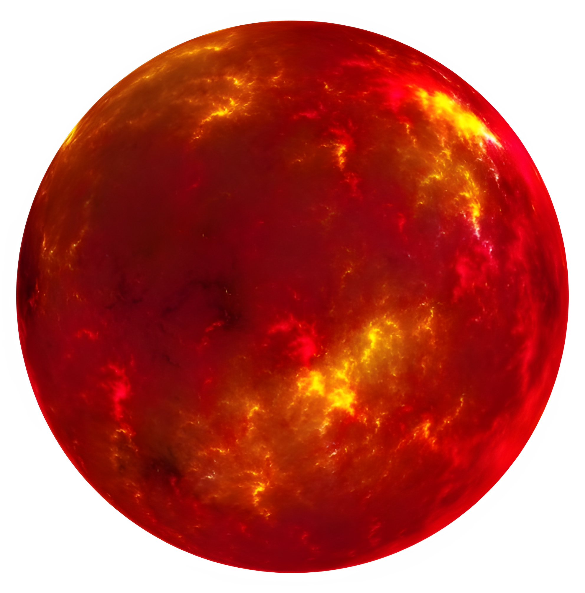
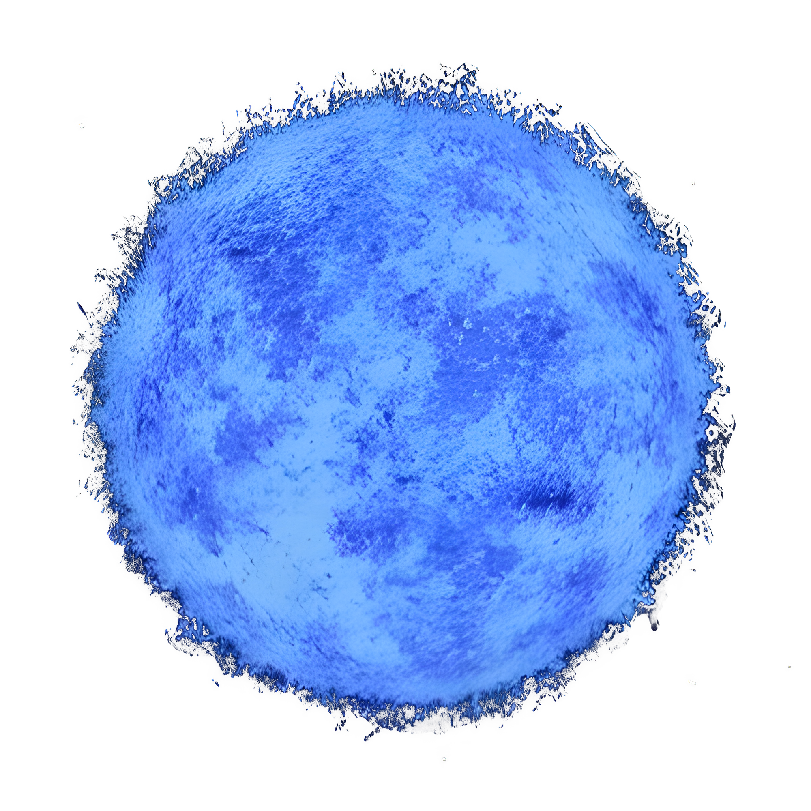

RED SUPERGIANT
642 ly
Betelgeuse
An evolved massive star that has exhausted its core hydrogen fuel.

BLUE SUPERGIANT
860 ly
Rigel
A blazing blue supergiant shining with tens of thousands of times the Sun's luminosity.
